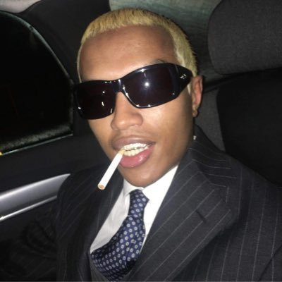

Drain Gang consists of 5 members, Bladee, Ecco2k, Thaiboy Digital, Whitearmor and Yung Sherman.
Benjamin Reichwald, or Bladee born April 9th, 1994. Raised in Skanstull, where he also met fellow Gravity Boys member Ecco2k. Through mutual friends, Bladee and Ecco met both rapper Thaiboy and producer Whitearmor and they together formed Gravity Boys. Eventually Bladee reached out to SadBoy's producer Yung Sherman on SoundCloud to ask if he wanted to collaborate. Eventually through this collaboration Bladee released his first mix-tape called GLUEE which made him extremely popular underground.
Zak Arogundade Gaterud born October 23, 1994. Long time friend of Bladee, and fellow artist. He is a jack of all trades, he has played the role of rapper, producer and singer but has also expanded his work beyond just music. Becoming a high-fasion model, business owner, clothes designer among other things. He was apart of not only all itterations of Drain Gang but also it's predecessor Smög Boys and a 2-man grindcore band consisting of Ecco and Bladee called Krössad that they made when they were 10.

Thanapat Thaothawong, or Thaiboy Digital born October 11th, 1994. Born in Thailand and moved to Sweden when he was 9-years old. He moved around a lot, originally living in the Austrian embassy where his mother worked. He was part of the underground music scene and eventually through mutual friends joined together with the rest of Gravity Boys. Everything was going smoothly, however in 2015 due to his mother's work visa expiring he was forced to move back to Thailand. Despite this, he remains a member of Drain Gang and continues to contribute to releases. An incredible artist and also, husband and father.
Whitearmor is very elusive. Not much is known about him, not even his real name. He is widely regarded as one of the most talented underground producers often making music off samples that he found out of seemingly nothing.
Axel Tufvesson, or Yung Sherman born 28th of February is a producer for both SadBoys and Drain Gang. He acted as the bridge for SadBoys and Gravity Boys due to his mutual friendships. All of the information on Yung Sherman is very surface level since he, like whitearmor likes to stay private.